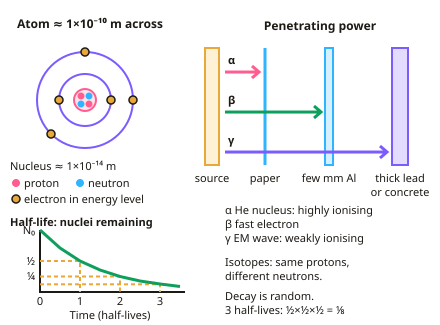

GCSE Physics · Topic 4
Atomic structure
Atomic structure in physics is about the nucleus: what it's made of, why some nuclei are unstable, and the radiation they give out.
We will follow the history of the atomic model, learn about alpha, beta and gamma radiation and nuclear equations, and calculate half-lives.
Then we look at background radiation, the hazards and uses of radiation in medicine and industry, and nuclear fission and fusion.
- 7 subtopics
- 432 questions
- Free: 4.1 notes and 10 questions
In this topic
- 4.1Atoms and radioactivityFree below · 74 questions
- 4.2Nuclear hazards, fission and fusionOpen in Full Marks · 71 questions
- 4.3History of the atomic model and electron energy levelsOpen in Full Marks · 71 questions
- 4.4Nuclear decay equations and changes in the nucleusOpen in Full Marks · 73 questions
- 4.5Half-life and radioactive decay calculationsOpen in Full Marks · 75 questions
- 4.6Background radiation and measuring count rateOpen in Full Marks · 30 questions
- 4.7Uses of radiation in medicine and industryOpen in Full Marks · 38 questions
4.1 · Free notes
Atoms and radioactivity

Key points
- An atom is about 1×10⁻¹⁰ m across, with a tiny nucleus (about 1×10⁻¹⁴ m) containing protons and neutrons, surrounded by electrons in energy levels.
- The plum pudding model was replaced by the nuclear model after the alpha particle scattering experiment; Bohr then showed electrons orbit at fixed distances.
- Isotopes are atoms of the same element with different numbers of neutrons. Unstable nuclei decay randomly, emitting radiation.
- Alpha (helium nucleus) is highly ionising, stopped by paper, range a few cm in air. Beta (fast electron) is stopped by a few mm of aluminium. Gamma (electromagnetic wave) is weakly ionising and needs thick lead or concrete.
- Half-life is the time taken for the number of unstable nuclei (or the count rate) to halve. Radioactive decay is a random process.
In more detail
- Penetration summary: alpha stopped by paper or a few cm of air; beta stopped by a few mm of aluminium; gamma reduced by thick lead or several metres of concrete.
- Ionising power: alpha is most ionising (large, 2+ charge), beta moderately, gamma least; the more ionising, the less penetrating.
- Worked half-life: a sample with count rate 240 cpm and half-life 3 hours falls to 120 after 3 h, 60 after 6 h, 30 after 9 h.
- Neutron radiation: neutrons can also be emitted, e.g. in fission; they are very penetrating and can make other materials radioactive.
Practice
Atoms and radioactivity: 10 questions
Pick an answer to check it, or open the answer for the explanation.
1. Which type of radiation is the most penetrating?
- Alpha
- Beta
- Gamma
- All are equal
Show answer
C: Gamma. Gamma radiation needs thick lead or concrete to reduce it.
2. What is an alpha particle?
- A fast-moving electron
- A helium nucleus (2 protons, 2 neutrons)
- An electromagnetic wave
- A neutron
Show answer
B: A helium nucleus (2 protons, 2 neutrons). It is highly ionising but has a short range.
3. A sample has a half-life of 4 days. What fraction remains after 12 days?
- 1/2
- 1/4
- 1/8
- 1/16
Show answer
C: 1/8. 12 days is three half-lives: ½ × ½ × ½ = 1/8.
4. What led to the nuclear model replacing the plum pudding model?
- The discovery of electrons
- The alpha particle scattering experiment
- The discovery of half-life
- Measurements of density
Show answer
B: The alpha particle scattering experiment. Some alpha particles were deflected by a small, dense, positive nucleus.
5. What is meant by radioactive decay being random?
- It happens at fixed intervals
- You cannot predict which nucleus will decay or when
- It never happens
- It only happens when heated
Show answer
B: You cannot predict which nucleus will decay or when. Only the overall average behaviour, such as half-life, can be predicted.
6. What happens to the mass number of a nucleus that emits a beta particle?
- It decreases by 4
- It stays the same
- It decreases by 1
- It doubles
Show answer
B: It stays the same. A neutron becomes a proton, so mass number is unchanged.
7. Roughly how many times wider is an atom (1×10⁻¹⁰ m) than its nucleus (1×10⁻¹⁴ m)?
- 1 000 000
- 10 000
- 1000
- 100
Show answer
B: 10 000. Dividing 1×10⁻¹⁰ m by 1×10⁻¹⁴ m gives 1×10⁴. The atom is about 10 000 times wider than its nucleus, so most of the atom is empty space.
8. How does a carbon-14 atom differ from a carbon-12 atom?
- It has 2 fewer neutrons
- It has 2 more electrons
- It has 2 more neutrons
- It has 2 more protons
Show answer
C: It has 2 more neutrons. Isotopes have the same number of protons but different numbers of neutrons. Carbon-14 has 14 − 12 = 2 more neutrons than carbon-12.
9. Uranium-238 has 92 protons. How many neutrons are in one nucleus?
- 146
- 238
- 330
- 92
Show answer
A: 146. Neutrons = mass number − proton number = 238 − 92 = 146. Adding the two numbers (330) is a common mistake.
10. Radium-226 (atomic number 88) emits an alpha particle. What are the mass and atomic numbers of the daughter nucleus?
- Mass 226, atomic 89
- Mass 226, atomic 86
- Mass 222, atomic 86
- Mass 222, atomic 88
Show answer
C: Mass 222, atomic 86. An alpha particle has 2 protons and 2 neutrons. The mass number falls by 4 (226 → 222) and the atomic number falls by 2 (88 → 86).
Keep going in Full Marks
Full Marks has 74 questions on Atoms and radioactivity (64 more than here), set out in practice levels. You also get notes and 3D models for all 7 subtopics of Atomic structure, plus games, timed exams and past papers.